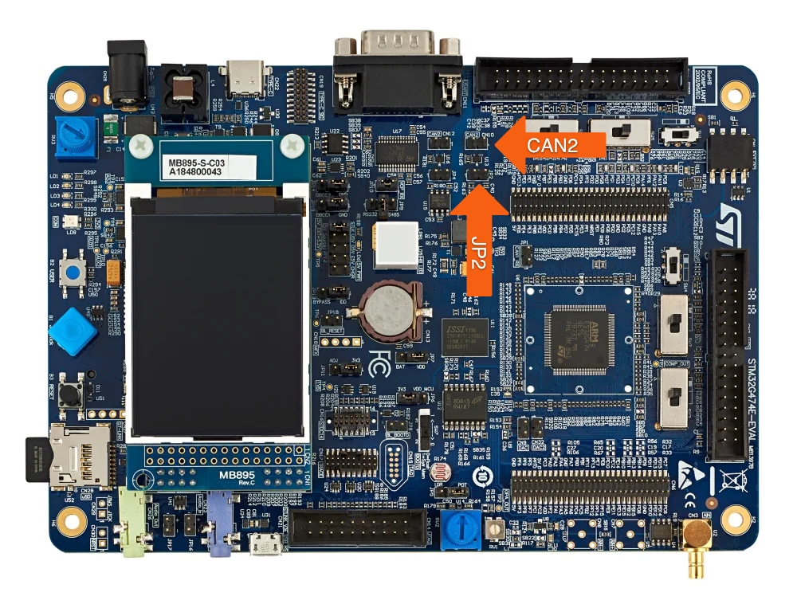

|
CANopen (FD) Master Protocol Stack
Making your systems precise, reliable and high-quality - Version 6.04.00
|
|
CANopen (FD) Master Protocol Stack
Making your systems precise, reliable and high-quality - Version 6.04.00
|
The CANopen FD Master protocol stack for the STM32G474E-EVAL runs on a bit-rate of 500 kBit/s on interface CAN2.

The example project can be built if the following programs are installed:
Please make sure that the value of WIN_TOOLCHAIN_PATH (for Windows) or UNIX_TOOLCHAIN_PATH (for macOS / Linux) inside the cmake/toolchain-gcc-<version>.cmake file is equal to the install path of the GNU Arm Embedded Toolchain.
Create a local build directory and start the build process within this directory. Make sure to pass the correct toolchain (i.e. GNU Arm Embedded Toolchain) to the CMake process via the parameter -DCMAKE_TOOLCHAIN_FILE. The following examples assume a GNU Arm Embedded Toolchain version 10.2.1.
For compilation in Windows you have to execute following command: